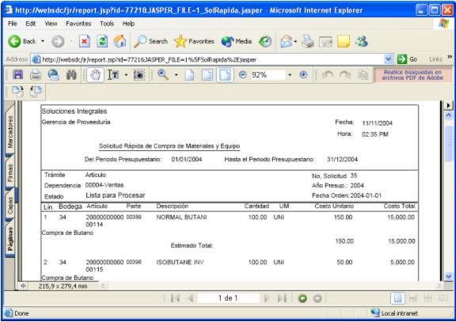

Este proceso permite realizar la impresión física de todas aquellas solicitudes de compra que han sido previamente creadas. La reimpresión de solicitudes es posible solamente para aquellas que son creadas por el mismo solicitante que esta realizando la consulta de reimpresión. O sea un usuario no puede reimprimir una solicitud que otro usuario crea.
Las solicitudes de compra que se pueden reimprimir, son aquellas que están aplicadas y que por lo menos hayan sido impresas una vez.
